Le Finistère: L'autre bout du monde !
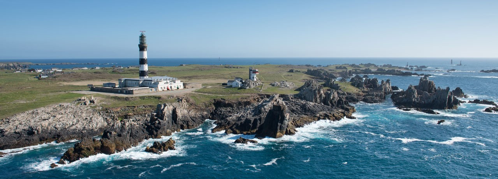
Les incontournables
Les villes et villages pittoresques
QUIMPER
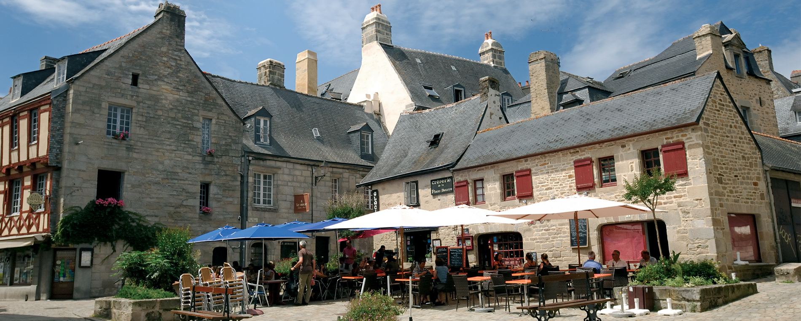
Quimper, chef-lieu du département, est une cité historique labellisée « Ville d’art et d’histoire » à visiter dans le Finistère.
Située aux confluences de l’Odet, la commune se divise en trois cœurs anciens : le quartier de Locmaria et les villes des évêques
et des Ducs de Bretagne. Avec ses maisons à colombages et encorbellements, ses passerelles au-dessus du fleuve et sa cathédrale Saint-Corentin,
c’est trop chouette !
CONCARNEAU
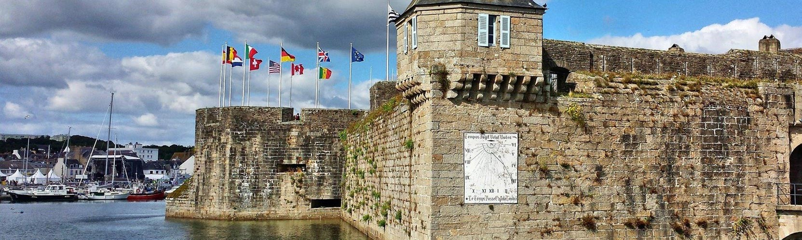
Pour faire un saut dans le temps, venez de mettre les pieds à Concarneau et visiter sa ville-close !
Cette commune est un incontournable dans le Finistère pour l'ambiance particulière qu’elle offre.
Son héritage culturel se profile sur les bateaux de pêche qui ondulent nonchalement sur ses quais.
Les activités de la crièe ponctuent en fin de journée le retour des pécheurs.
Mais son patrimoine historique se démarque plus particulièrement dans sa ville-close.
Cet îlot fortifié est l’un des sites les plus visités de Bretagne.
LOCRONAN
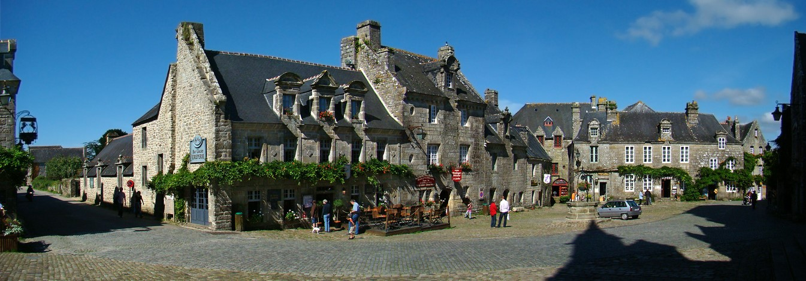
LOCRONAN tient son nom de Saint-Ronan, ermite fondateur de la cité au Xème siècle. Il y règne une ambiance délicieusement archaique et rurale.
Et pour cause, cette cité médiévale de granit bleuté possède de très belles demeures merveilleusement conservées, à l'architecture remarquable
à tel point que le temps semble s'être arrêté... à découvrir à pied autour de la belle place centrale et de son puits !
ROSCOFF
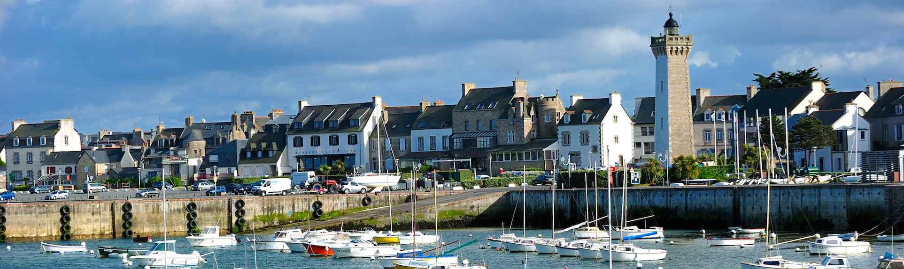
Sur la côte nord de la Bretagne, la petite cité de Roscoff vous invite dans sa station balnéaire de caractère !
Cette presqu’île de la baie de Morlaix enchante pour son climat iodé, son eau de mer transparente et ses plages de sable fin.
ROSCOFF peut vous faire découvrir une panoplie d’activités nautiques. laissez-vous également tenter par une balade le long de ses maisons décorées.
Le Pays Bigouden
PENMARCH
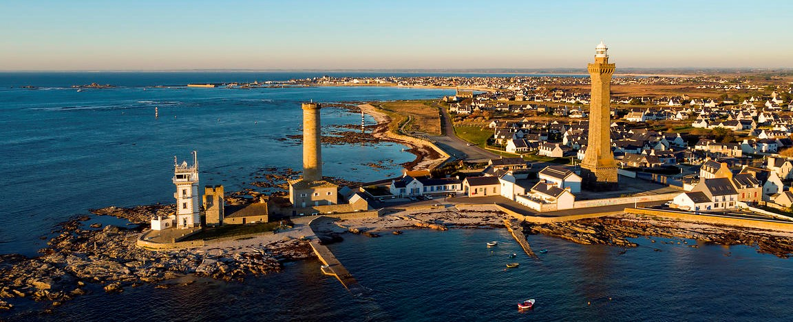
Composé de 22 communes, le Pays Bigouden possède une façade maritime aux deux visages : au sud, les ports de pêche et de plaisance de Sainte-Marine
jusqu'à Penmar'ch témoignent d'une activité de pêche importante.
A l'ouest, Une immense baie de 30 km qui part de la pointe de la torche jusqu'à Audierne, sauvage et ventée. Idéale pour les activités sportives nautiques.
La Pointe de la TORCHE
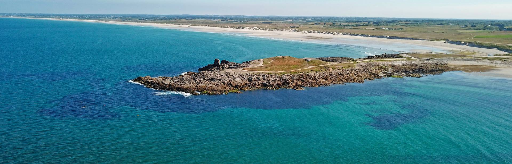
La pointe de la Torche ou Beg an Dorchenn, en breton, signifie « la pointe de la butte ».
S’avançant dans la mer, La Torche est un éperon rocheux, une terre sauvage qui délimite au sud la Baie d’Audierne.
Un site du bout du monde, abrupt mais tellement beau. Courez-y entre mars et avril.
Sur la palud, des champs entiers de tulipes y sont cultivés. On se croirait en Hollande ! Assurément la période de l’année à privilégier pour s’y rendre.
Le spot des surfeurs !L’éperon rocheux de la Torche est un spot connu des surfeurs et funboardeurs. Les vagues et le vent y sont toujours au rendez-vous.
De nombreuses compétitions y sont régulièrement organisées ?
LES MONT D'ARRÉE

Qui n’a pas vu les monts d’Arrée, n’a pas tout vu de la Bretagne… car ces terres de légendes, souvent présentées comme ingrates et inhospitalières,
possèdent des paysages atypiques, uniques pour la région. Les monts d’Arrée étaient autrefois une terre au sol pauvre où seules quelques cultures
(pomme de terre et blé noir principalement) arrivaient à pousser pour alimenter la population rurale du Centre-Bretagne.
Aujourd’hui, cette nature intacte présente le plus grand ensemble de landes de Bretagne, composé principalement d’ajoncs et de bruyères.
À la belle saison, vous pourrez y croiser des moutons utilisés pour entretenir et préserver la lande.
La Pointe du RAZ
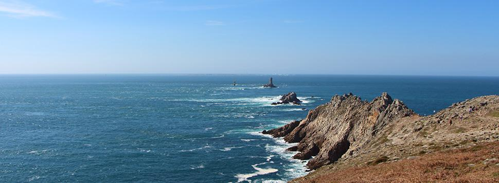
Venez fouler le sol de l'un des sites les plus célèbres de l'Occident et admirer ce paysage à couper le souffle !
Cette pointe et ses falaises découpées (70 mètres) témoignent de la force des éléments. Et que dire du panorama :
en face le Raz de Sein (Phare de la Vieille et Phare de Tévennec, l'île de Sein, île située à 8 kilomètres et chaussée de Sein) et au loin,
tout au loin, le fameux phare Ar Men, le plus connu, le plus éloigné des côtes françaises, dont la construction dura 34 années.
La Presqu'ile de CROZON
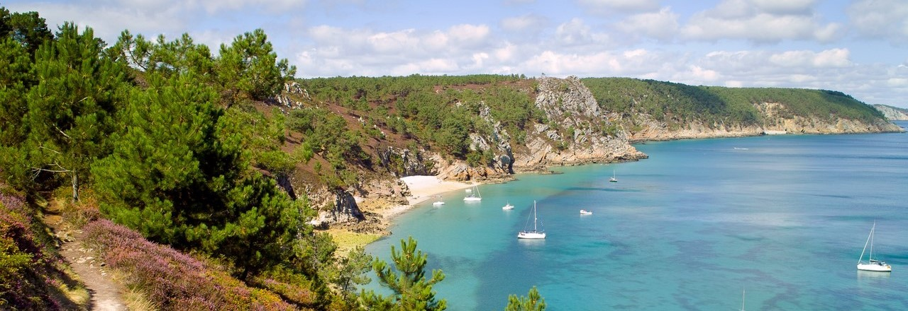
Ce petit morceau de terre se situe juste au sud de Brest, tout à fait à l’ouest de la pointe bretonne.
Ce site naturel et sauvage est le lieu idéal pour le belles promenades, pour vous ressourcer et pour admirer les paysages magiques et luxuriants.
Un concentré de ce qu’il y a de plus beau en Bretagne ! Aussi belle que mystérieuse, la Presqu’île de Crozon a su conquérir le cœur des touristes
en quête de sensations fortes, de farniente et de nature grâce à ses multiples atouts.
Les îles du FINISTÈRE
OUESSANT
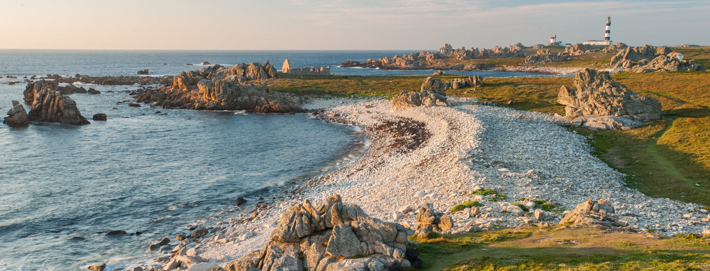
Des paysages majestueux recouvrent les hautes falaises ciselées de l’île de Ouessant, Une nature unique et multiple se cache sur cette
île finistérienne dominée par son célèbre phare du Créa
L'ile de SEIN
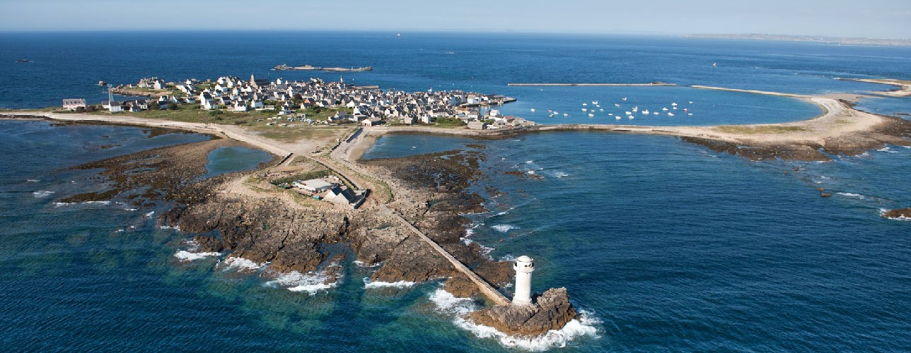
Flânez à votre rythme dans ce labyrinthe de ruelles et de maisons de marins ou à travers la lande. Cette
île à fleur de l’océan éveillera vos sens avec le parfum des embruns, des algues, de la criste-marine et le
roulement de la mer sur les galets.
MOLENE
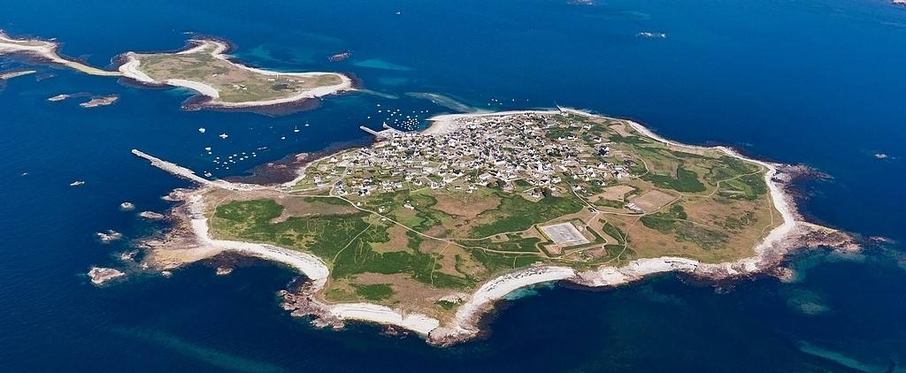
Pour les personnes en quête de tranquillité, Molène est une destination idéale pour la farniente. Avec son
petit port et ses saillons de galets, déambulez dans les ruelles du petit bourg ou partez en randonnée
pour rencontrez les terriers des lapins de garenne.
l'archipèle des GLENANS
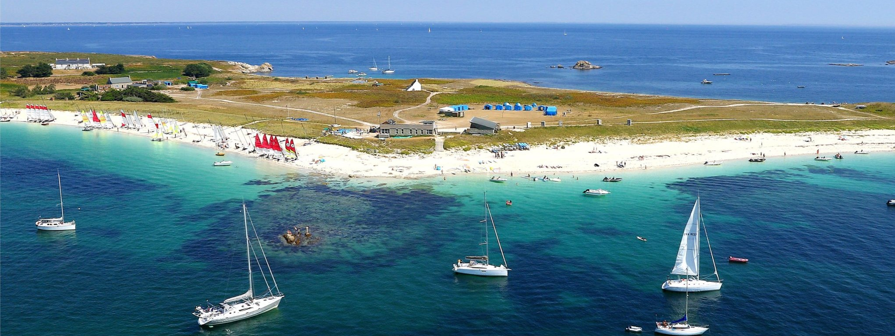
Au large de Fouesnant, cet archipel paradisiaque rappelle la beauté des îles polynésiennes.
Il se compose de sept îlots autour d’une mer intérieure aux eaux transparentes, avec des plages de sable
blanc et une station balnéaire. Un cadre de rêve se présente à vous pour vos activités nautiques.